Research notes
Attention Is All You Need: Transformer Model Architecture
This note follows the Transformer model architecture review. The flow is: word representation, positional encoding, attention, multi-head attention, masking, cross-attention, residual addition, and layer normalization.
Paper anchor: dispensing with recurrence and convolutions
, positional encodings
, Scaled Dot-Product Attention
, residual connection
, layer normalization
.
One-Hot Encoding
A one-hot vector represents a word with one active index and zeros everywhere else. For example, two words can be represented as separate basis vectors:
The problem is that the inner product between different one-hot vectors is always zero. That means dog and puppy look as unrelated as dog and pencil, even though dog and puppy are semantically closer. This motivates word embeddings.
Word Embedding
A word embedding expresses a word as a dense vector. Instead of using a single active index, the meaning of a word is distributed across multiple scalar dimensions. Similar words should end up with similar vectors and shorter distances.
The usual intuition from word2vec-style embeddings is that the model learns from context. If taxi and airplane often appear in similar contexts, such as "heading to Pusan", their vectors are updated toward similar regions. A classic analogy can be written as:
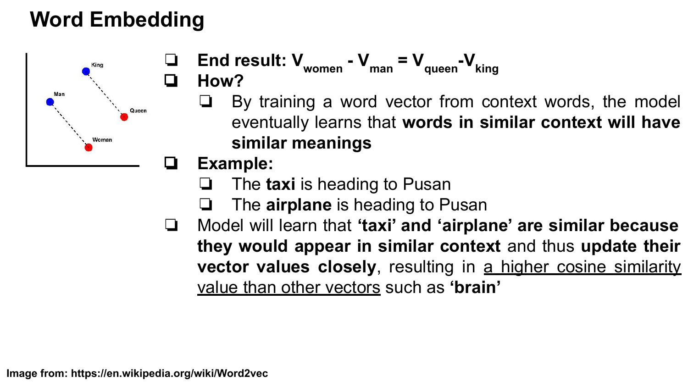
Word Embedding in Transformer
In the Transformer, a token starts as a one-hot vector over the vocabulary and is projected into a dense embedding vector. If the vocabulary size is \(V\) and the embedding dimension is \(d_{\mathrm{model}}\), the embedding lookup can be written as:
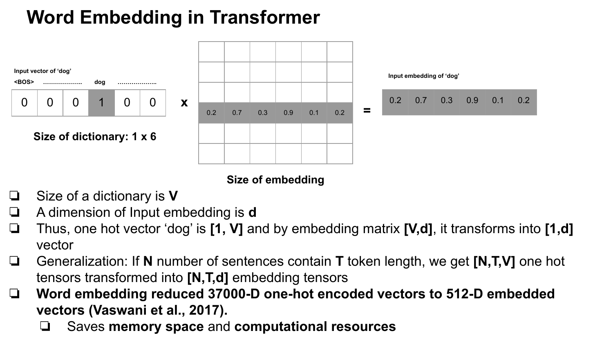
Generalizing to a batch, \(N\) sentences with \(T\) tokens each move from one-hot tensors to embedding tensors:
In the base Transformer, \(d_{\mathrm{model}} = 512\). For a vocabulary around 37,000 tokens, this gives the practical intuition of replacing a very high-dimensional sparse vector with a 512-dimensional dense vector.
In the slide's toy example, \(V=6\) and \(d=6\). The one-hot vector for "dog" is \([0,0,0,1,0,0]\), and the lookup returns \([0.2,0.7,0.3,0.9,0.1,0.2]\).
Why Positional Encoding Is Needed
RNNs process input sequences step by step. A hidden state \(h_t\) depends on \(h_{t-1}\), so position is naturally entangled with the recurrence:
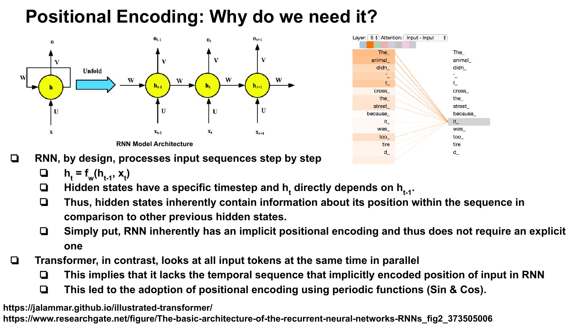
The Transformer, by contrast, processes all tokens in parallel. This gives up the implicit time order that RNN hidden states carry. Therefore, token position must be injected explicitly.
Positional Encoding in Transformer
The sinusoidal positional encoding uses sine for even dimensions and cosine for odd dimensions. Here, \(pos\) is the token position, \(i\) is the dimension-pair index, and \(d_{\mathrm{model}}\) is the embedding dimension.
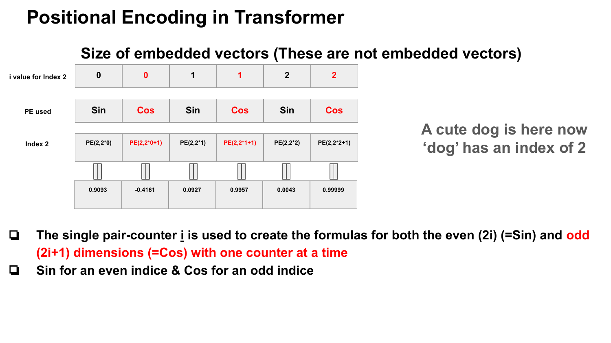
Each dimension uses a sinusoid with a different wavelength. Lower dimensions cycle faster, while higher dimensions cycle more slowly. This makes position visible to the model without using recurrence.
For a token such as "dog" at index 2, the positional vector is added directly to the embedding vector:
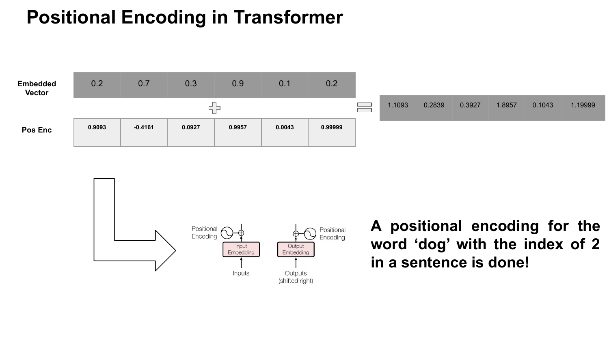
Attention in Seq2Seq
In sequence-to-sequence attention, the decoder state can serve as a query \(Q\). Encoder hidden states serve as keys \(K\) and values \(V\). The dot product \(QK^\top\) scores how related the decoder state is to each encoder state.
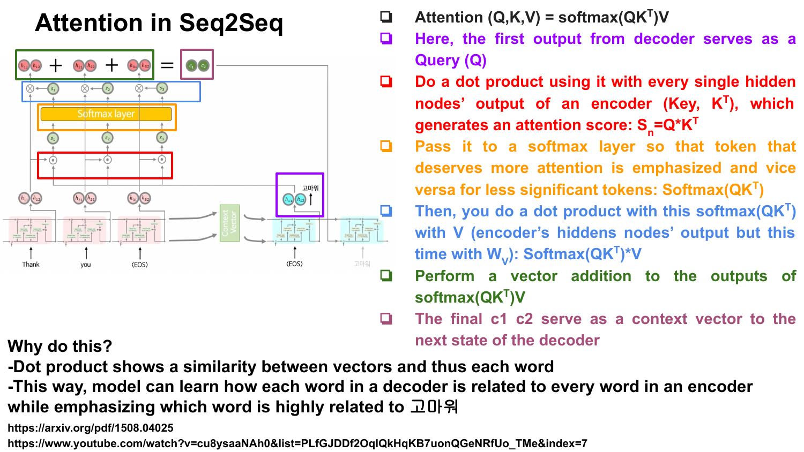
The softmax turns scores into attention weights. Multiplying those weights by \(V\) creates a weighted context vector. This helps the decoder focus on relevant input tokens instead of relying only on one compressed final encoder state.
Why Add Attention to Seq2Seq?
A plain encoder-decoder model compresses the input sentence into a context vector. For long inputs, this becomes a bottleneck: a lot of information has to fit through one summary representation. Attention lets the decoder look back at different encoder states, which is especially useful for translation where input and output lengths can differ.
Self-Attention in Transformer
Transformer attention includes self-attention inside the encoder and decoder. In self-attention, the same sequence supplies the inputs used to produce \(Q\), \(K\), and \(V\). Encoder self-attention relates encoder tokens to other encoder tokens; decoder self-attention relates generated-side tokens to previous generated-side tokens.
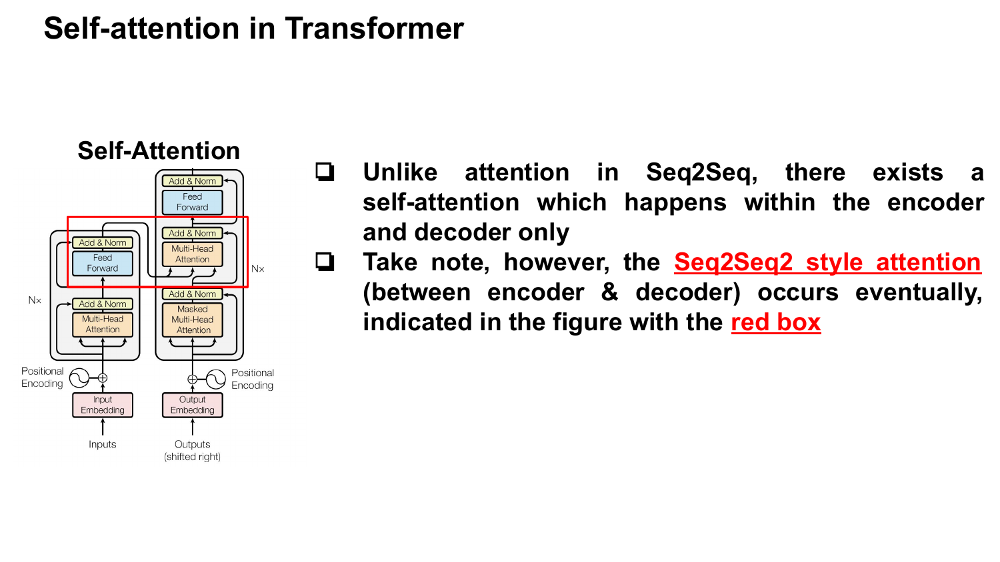
The encoder-decoder attention still exists: decoder outputs become queries, and encoder outputs become keys and values. That is the cross-attention block.
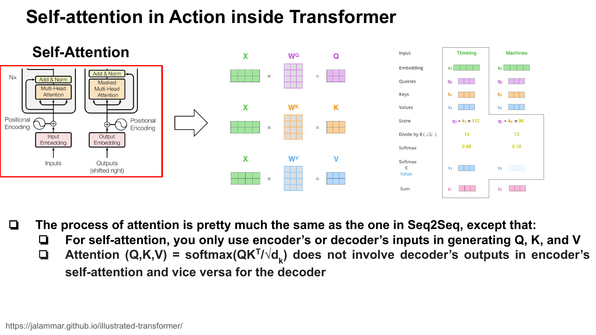
Scaled Dot-Product Attention
Transformer self-attention uses scaled dot-product attention:
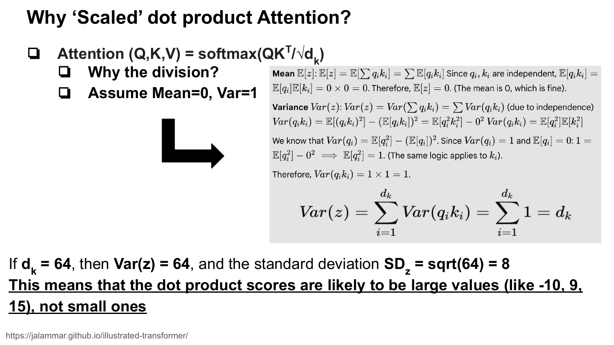
The division by \(\sqrt{d_k}\) matters. If \(q\) and \(k\) have components with mean \(0\) and variance \(1\), their dot product has variance \(d_k\):
With \(d_k = 64\), the standard deviation is \(8\). Dot-product scores can become large, softmax can saturate near 0 or 1, and gradients can become small. Scaling keeps the scores in a more workable range.
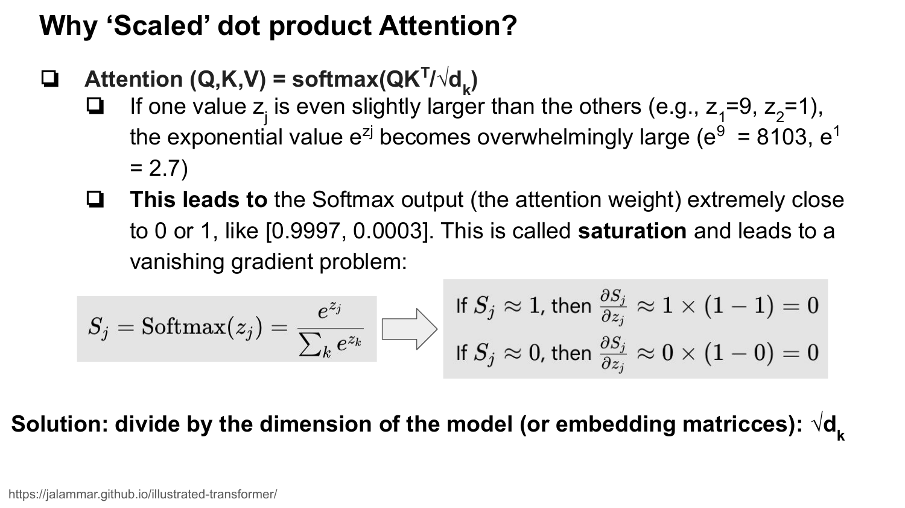
Multi-Head Attention
Multi-head attention is like having several attention filters. Each head has its own learned projections, so different heads can extract different relational patterns.
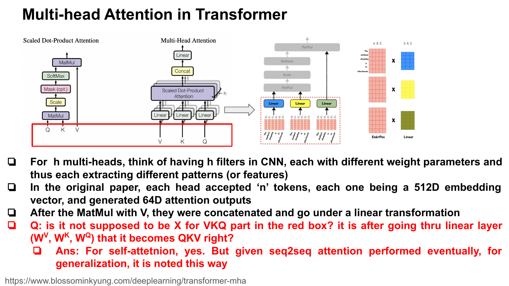
In the base Transformer, \(h=8\). With \(d_{\mathrm{model}} = 512\), each head uses \(d_k = d_v = 64\). After attention is computed in parallel, the head outputs are concatenated and linearly transformed.
Masking in Transformer
The decoder must generate output tokens one at a time. Future tokens should not affect the current token's prediction. Masking solves this by adding \(-\infty\) to illegal future attention scores before softmax:
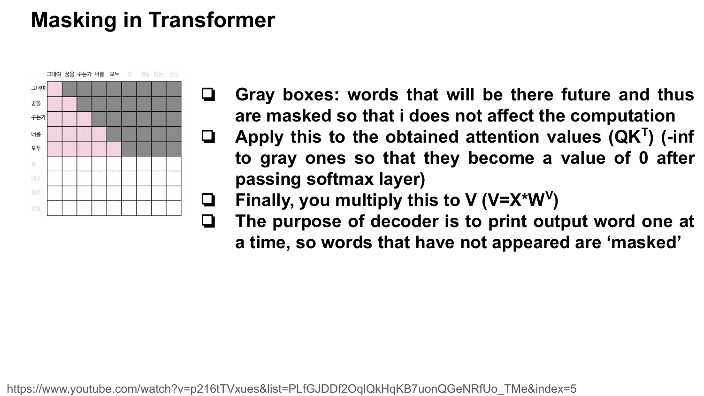
Positions that should be masked become probability \(0\) after softmax. The result is then multiplied by \(V\).
Cross-Attention in Transformer
Cross-attention works like the attention used in seq2seq. The decoder's self-attention output supplies the query. The encoder output supplies keys and values:
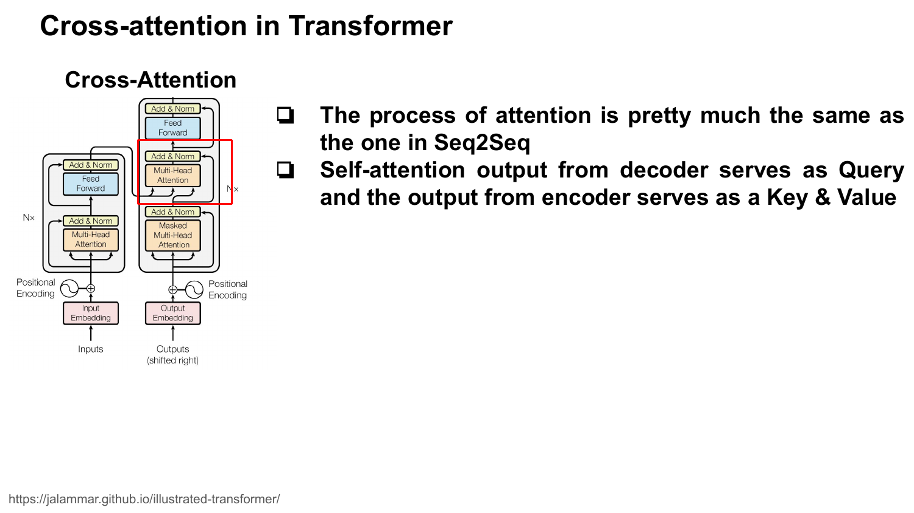
Addition: Residual Connection
After a sublayer such as multi-head attention, the Transformer adds the original input back to the sublayer output. This skip connection helps preserve original information and improves gradient flow.
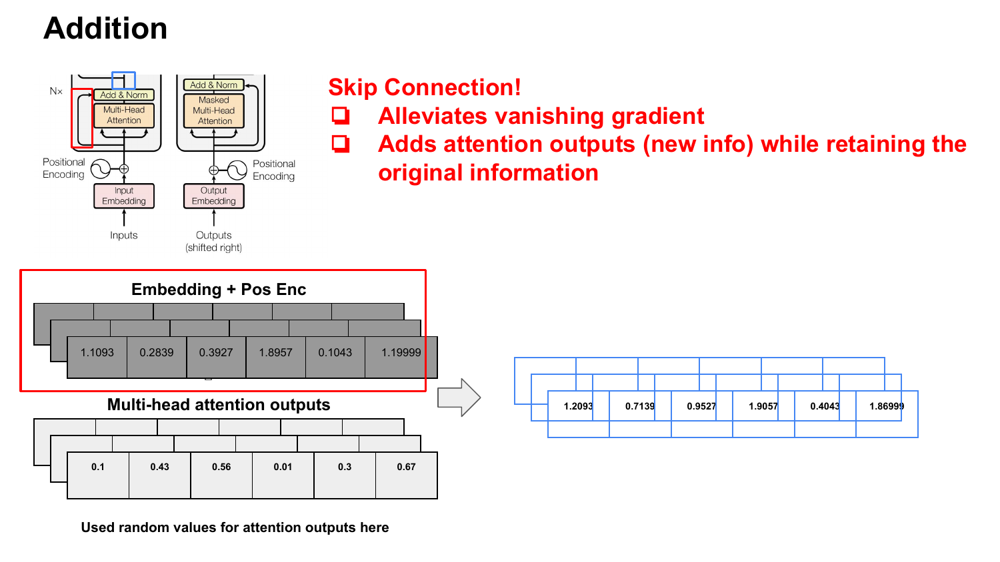
Covariate Shift and Layer Normalization
During training, earlier layers keep changing their parameters, so the distributions seen by later layers can also shift. Layer normalization keeps each sample's representation on a more stable scale, which supports smoother gradients and faster training.
In the Transformer block, residual addition and layer normalization are tied together:
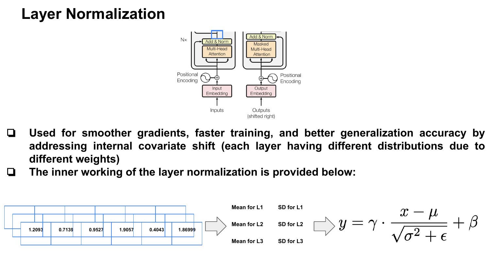
Why Layer Norm Instead of Batch Norm?
Batch normalization calculates statistics across a batch dimension. For text, batches often require padding:
- Sentence 1:
[I, love, big, brother] - Sentence 2:
[Winston, is, dead, <PAD>] - Sentence 3:
[Thoughtcrime, <PAD>, <PAD>, <PAD>]
Batch norm can mix real tokens with padding tokens when computing column-wise statistics. Layer norm instead computes statistics within each sample representation, which fits variable-length text more naturally.
Takeaway
The Transformer replaces recurrence with attention. Embeddings provide semantic vectors, positional encodings inject order, scaled dot-product attention computes token relationships, multi-head attention lets the model learn several relation types in parallel, and residual layer normalization stabilizes deep stacking.
Source: Vaswani et al., Attention Is All You Need.